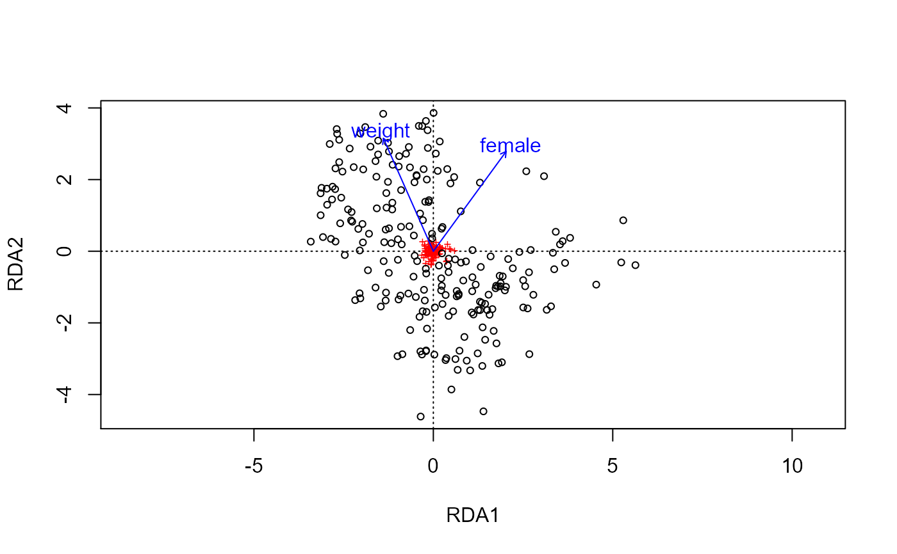

Extends functionality of phyloseq::ordinate(). Results can be used directly in plot_ordin8.
ordin8( data, method = c("PCoA", "PCA", "CCA", "RDA", "CAP")[1], constraints = 1, conditions = NULL, return = "all", ... )
| data | list object output from calc_dist or tax_agg (if no distance calculation required e.g. for RDA) |
|---|---|
| method | which ordination method to use? currently one of 'PCoA', 'PCA' or 'CCA' |
| constraints | (a vector of) valid variable name(s) to constrain PCoA or RDA analyses, or leave as 1 for unconstrained ordination |
| conditions | (a vector of) valid variable name(s) to partial these out of PCoA or RDA analyses with Condition(), or leave as NULL |
| return | choose which parts of list object to return |
| ... | optional arguments passed on to phyloseq::ordinate() |
list object (or named parts)
library(phyloseq) library(vegan) data("dietswap", package = "microbiome") # create a numerical variable to use as constraint sample_data(dietswap)$female <- dplyr::if_else(sample_data(dietswap)$sex == "female", true = 1, false = 0) # add a couple of missing values to demo automated dropping of observations with missings sample_data(dietswap)$female[c(3, 4)] <- NA # create another numeric variable sample_data(dietswap)$weight <- dplyr::recode(sample_data(dietswap)$bmi_group, obese = 3, overweight = 2, lean = 1) # compute ordination test <- dietswap %>% tax_agg("Genus") %>% calc_dist("bray") %>% ordin8(constraints = c("weight", "female"))#> #>#>#>#>#> List of 4 #> $ info :List of 5 #> $ ordination:List of 13 #> ..- attr(*, "class")= chr [1:3] "capscale" "rda" "cca" #> $ distMat : 'dist' num [1:24090] 0.764 0.77 0.805 0.731 0.728 ... #> ..- attr(*, "Labels")= chr [1:220] "Sample-1" "Sample-2" "Sample-5" "Sample-6" ... #> ..- attr(*, "Size")= int 220 #> ..- attr(*, "call")= language as.dist.default(m = as.matrix(distMat)[!NAs, !NAs]) #> ..- attr(*, "Diag")= logi FALSE #> ..- attr(*, "Upper")= logi FALSE #> $ ps :Formal class 'phyloseq' [package "phyloseq"] with 5 slots# compute RDA ("aitchison distance") directly from phyloseq (and demo return argument) test2 <- dietswap %>% tax_agg("Genus") %>% tax_transform("clr") %>% ordin8(method = "RDA", constraints = c("weight", "female"), return = "ordination")#> #>#>#>#># plot with oldschool vegan graphics to show it returns a standard interoperable ordination object ordiplot(test2)